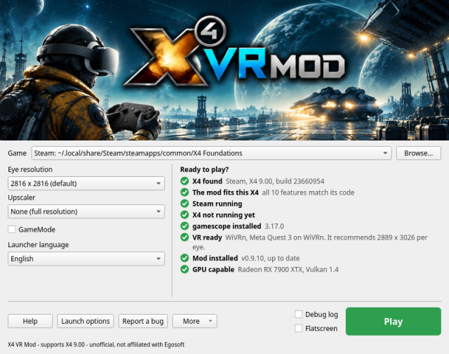
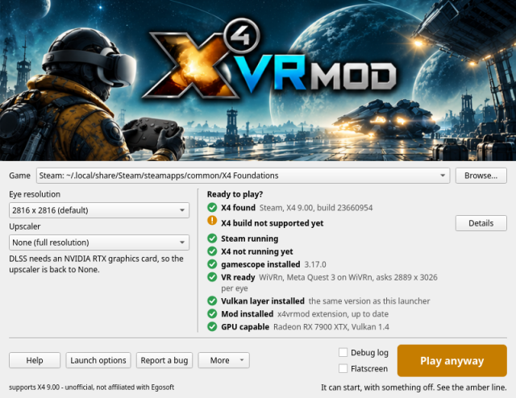
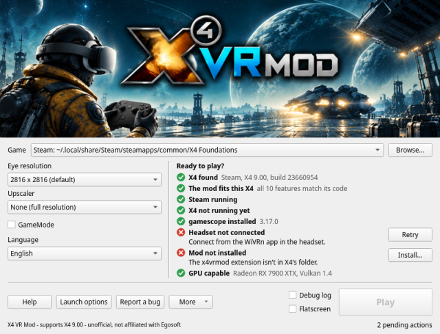
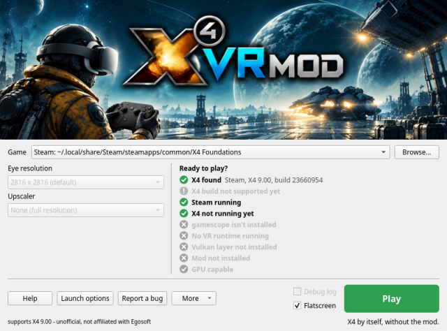
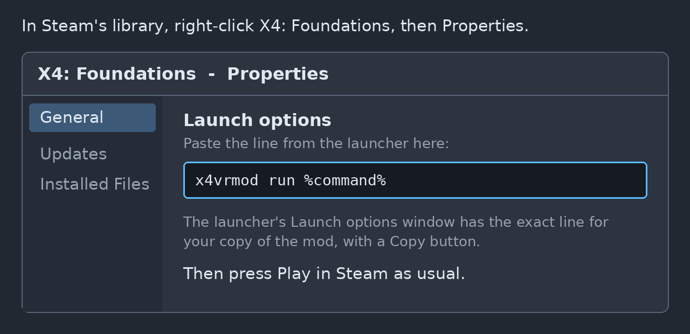
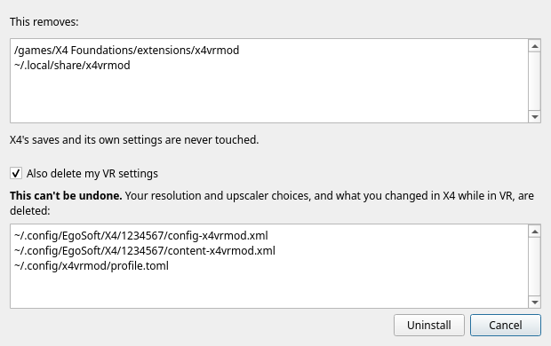
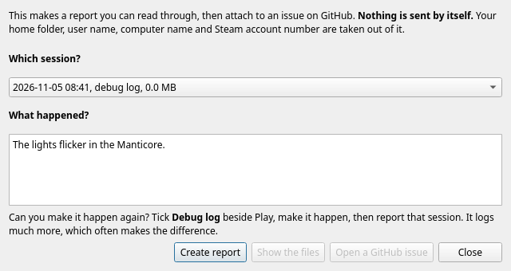

This window finds X4: Foundations, puts the mod in place, tells you whether everything is ready, and starts the game in VR. Hold the pointer over anything in the window for a short explanation. This page has the rest.
Getting started | Game | Eye resolution | Settings by headset | Upscaler | GameMode | Eye distance | Play | Flatscreen | The checklist | Launch options | Install | Uninstall | More | WiVRn or SteamVR? | Troubleshooting | Reporting a bug

The checklist updates by itself, so there's no need to reopen anything after you start the runtime or connect the headset.
The copy of X4 to use. The launcher asks Steam which of your libraries holds X4, and looks in Heroic's list of GOG games and in ~/GOG Games. If yours isn't listed, press Browse and choose the program called X4.
It must be the Linux version. The mod patches X4's Linux program as it runs, and hooks its Vulkan renderer through Linux's own mechanisms. The Windows version running under Proton is a different program, so if you pick X4.exe the launcher tells you it can't work. If Steam is set to force Proton for X4, turn that off in X4's Properties, under Compatibility, and let Steam download the Linux version.
GOG: the launcher finds it, and everything works as it does on Steam's. Choose it in the Game box if you have both.
The size of the image made for each eye. The eye is always square here. Larger is sharper, and your GPU has to draw it twice, once for each eye.
Why it's chosen here and not in X4: the mod's images and gamescope's screen are all sized when the game starts, and X4 applies its own menu's choice immediately, which breaks a running session. So it's chosen before starting.
When the headset is connected, the list marks the size nearest what your headset asks for. That's the runtime's recommendation, which already allows for the lenses, and it's usually larger than the headset's panel.
Above 4068 per eye, the map's 3D view is flat instead of in depth, because of how X4 places large images in memory. With SteamVR, 4224 has shown a jumbled picture; if you see that, go lower.
Starting points, worked out from each headset's panel. Mid is the sharp image at full cost. Low is the same size upscaled, so X4 draws less than half the pixels. High is a larger image upscaled, so X4 draws about what Mid draws, and the upscaling and the larger image cost extra on top.
| Headset | Panel, per eye | Low | Mid | High |
|---|---|---|---|---|
| Meta Quest 3 | 2064 x 2208 | 2816 + FSR 1 Quality | 2816 | 4224 + FSR 1 Quality |
| Steam Frame | 2160 x 2160 | 2816 + FSR 1 Quality | 2816 | 4224 + FSR 1 Quality |
| Pico 4 | 2160 x 2160 | 2816 + FSR 1 Quality | 2816 | 4224 + FSR 1 Quality |
| Meta Quest 3S | 1832 x 1920 | 2400 + FSR 1 Quality | 2400 | 3600 + FSR 1 Quality |
| Meta Quest 2 | 1832 x 1920 | 2400 + FSR 1 Quality | 2400 | 3600 + FSR 1 Quality |
| Valve Index | 1440 x 1600 | 2048 + FSR 1 Quality | 2048 | 3072 + FSR 1 Quality |
| HTC Vive Pro | 1440 x 1600 | 2048 + FSR 1 Quality | 2048 | 3072 + FSR 1 Quality |
| HTC Vive | 1080 x 1200 | 1600 + FSR 1 Quality | 1600 | 2400 + FSR 1 Quality |
Only the Quest 3's Mid and High have been played, on WiVRn with a Radeon RX 7900 XTX. The rest is the same rule applied to each panel. If you try one, what you find is welcome in a bug report.
An upscaler lets X4 draw a smaller image and enlarges it, in exchange for some sharpness. With one on, "Renders" under the list tells you the size X4 really draws.
The automatic choice: going above 3200 per eye with None selects FSR 1 Quality, because drawing that many pixels twice is more than most GPUs can do smoothly. A note says so, and you can choose None again to undo it. A choice you made yourself is never changed, and coming back to 3200 or less returns to None only if the launcher chose it.
If Feral GameMode is installed, this box appears. Ticked, it gives the game priority over the rest of your system while it runs, which usually means a few more frames per second. It applies however you start the game: Play, Flatscreen, Steam's launch line or a terminal. If it isn't installed, the box doesn't appear and nothing changes.
There's nothing to set: the mod takes the distance between your eyes from the headset, from the first frame on. Turn your headset's own IPD adjustment and the world follows it while you play.
To override it, if the world feels too small or too large, give your own distance in metres. An optician or a phone app can measure it. It takes effect the next time you start the game, and stays until you take it off:
x4vrmod config set ipd 0.0635
That one is 63.5 mm. To go back to the headset's:
x4vrmod config unset ipd
While an override is set, the world no longer follows the headset's adjustment. If the headset ever reports a distance no eyes could be (outside 50 to 80 mm), the mod doesn't believe it, keeps the last good one or else 64 mm, and says so in its log.
Green "Play": everything is ready.
Amber "Play anyway": the game can start, but something won't work. The amber line says what. This mostly happens after an X4 update.

Grey "Play": it can't start yet. A red line says why, usually with a button that fixes it.

While the game runs, the button says "X4 is running" and the launcher stays out of the way. Afterwards a line tells you how the session went.
Tick Flatscreen to start X4 by itself, on your screen, the way it starts without the mod, even with VR running. Nothing of the mod's is loaded and its extension stays off, so your own settings and saves are in play, and the lines that only matter to the mod grey out.

It's a baseline: if something also goes wrong there, it isn't the mod, and that's very useful to say in a bug report.
The launcher found a Linux copy of X4 and read its version. See Game if it didn't.
Several of the mod's features change X4's code in memory, so they need exactly the code they were written for. Rather than compare a checksum, which would reject a small hotfix that changes nothing we touch, the launcher runs the mod's own checks on X4's file, feature by feature.
If this line is amber, the listed features turn off for safety, and the game still runs. After an X4 update, wait for a new release of the mod, or play with those off.
The Steam version of X4 needs Steam open, because X4 asks it for your account as it starts. A GOG copy doesn't need it, and this line doesn't appear.
The mod has to be there from the moment X4 starts, so a copy that's already open has to be closed first.
gamescope gives X4 a virtual screen sized for both eyes, whatever your desktop's resolution is. It's a separate program; install it from your distribution's packages.
The launcher briefly asks your VR runtime through OpenXR whether a headset is there, without starting a VR session, which is more reliable than looking for running programs.
The mod's parts, which Install puts in place together. One sits between X4 and your GPU and makes the two eye images, and only loads when the mod asks for it, so no other program is affected. The other is a small X4 extension in X4's extensions folder, which lets your head turn further than X4 normally allows and removes the camera sway. "Out of date" means they're from a different release than this launcher; Install replaces them.
The mod draws both eyes in one pass with a Vulkan feature called multiview, and needs Vulkan 1.2 and one spare descriptor set. Nearly any GPU from recent years has these. If this line is red, update your graphics driver first.
Launch options gives you the exact line for your copy, with a Copy button. Play is the simplest way in, and these are for when you'd rather start from Steam or a terminal. Both run the mod the same way as Play, with the settings in this window.

Steam replaces %command% with its own command for X4, and x4vrmod run starts X4 with that command, so it has to be there. With that line set, Steam always starts X4 in VR, so clear it to play flat again.
Started from Steam, a short logo plays first, because Steam's command doesn't include the options Play adds to skip it. If Steam is set to run X4 through Proton, the line refuses to start and says why, because the mod works only with the Linux version. Steam installed as a Flatpak isn't expected to work with this line, because the mod and gamescope aren't inside its sandbox.
The Install button appears on the checklist line it fixes. Installed from a zip, it copies the mod to ~/.local/share/x4vrmod and registers its Vulkan layer for you alone, so you can delete the unpacked folder and Steam's launch line keeps working. Installed from a package, those are in place already. Either way it puts the extension in X4's folder.
What it does to your saves: X4 marks saves made with a non-Egosoft extension as modified. The mod's extension is enabled only in VR sessions, so playing flat isn't affected.
Your settings: X4's own config.xml is never written. In VR the mod keeps its own copies beside it, named config-x4vrmod.xml and so on, so what you change in VR stays in VR and your flat game keeps its settings. The one thing it doesn't copy is X4's interface scale, which it starts at 0.6, because X4's own 1.0 is too big in a headset. You can still change it in X4's options.
Under More, so it can't be pressed by accident. It lists everything it will remove before removing it, and it only ever removes the mod's own files. X4's saves and its own settings are never touched.

The box Also delete my VR settings is off by default. Leave it off if you might come back. With it on, your VR settings in X4's profile folders and this window's choices are deleted, and that can't be undone.
A package stays installed until you remove it with your package manager.
Open logs: each session writes its own log here, and the newest 20 are kept. A bug report needs the log of the session that went wrong.
Add to application menu: for the zip, once it's installed. A package has its entry already.
Advanced: X4's field of view, and extra environment variables for trying what a bug report asks for. You don't need these to play.
Reset to defaults: returns this window's settings to their defaults, and keeps the game you chose.
About: the version, and the licence. This is an unofficial mod, not affiliated with or endorsed by Egosoft.
We suggest WiVRn. On the same headset it gives a clearer picture than SteamVR, whose picture is usually smooth but blurrier, and it lets you choose the video codec. SteamVR has also shown a jumbled picture at 4224 per eye, where WiVRn is clean.
WiVRn streams to standalone headsets, such as the Quest and Pico. A headset wired to the PC, such as a Valve Index or an HTC Vive, doesn't stream, so it uses SteamVR.
On WiVRn, the video codec makes the most difference. You choose it in WiVRn's settings.
| Codec | What to expect |
|---|---|
| AV1, through VAAPI | Seems to be the best: a clear picture with minimal latency. It needs a GPU that can encode AV1. |
| H.265 | A very clear picture, but it adds latency, which may show as artifacts and stutter while you play. |
| H.264 | Efficient, but blurry. |
On SteamVR the codec is chosen for you. It's usually smooth, but blurry compared with WiVRn. That's one of the reasons we suggest WiVRn.
That comes from the Steam Overlay, which also handles Steam Input, not working with Wayland. The newer 64-bit Steam that's on its way may eventually resolve it.
This has been seen with SteamVR at 4224 per eye. Choose a lower eye resolution.
The line beside Play shows the last thing the launch said. If that doesn't explain it, report it: a report works even if the game never got as far as a log.
Bug reports are how the mod gets better, and the launcher does most of the work:

If you can make it happen again, do it with a debug log. Tick Debug log beside Play, make it happen, quit, and report that session. The game plays the same, and the log records much more of what the mod was doing. It runs to tens of MB for a session, so leave it off otherwise; it's off again next time you open this window.
What's in a report: the mod's and X4's versions, your system, GPU and headset, the checklist, your settings, the session's log, and a crash's backtrace if the system kept one. They're plain text, and Show the files lets you read them.
The loading screen in VR shows the mod's version, build and date, in its corner. That's handy to include if you can't get as far as making a report.
What's taken out: your home folder, user name, computer name and Steam account number. Nothing leaves your computer unless you attach it yourself.